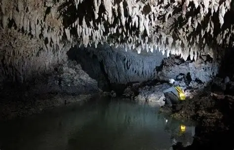
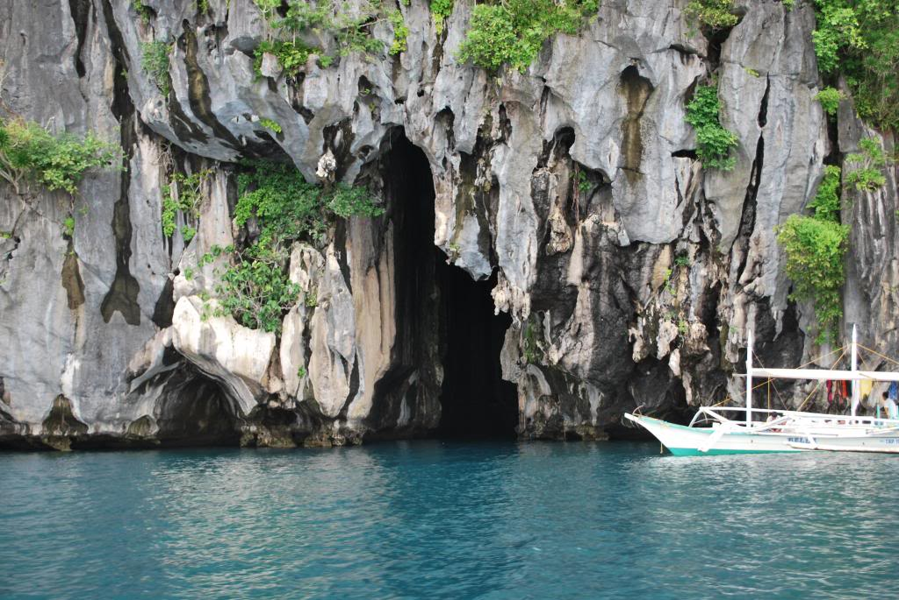
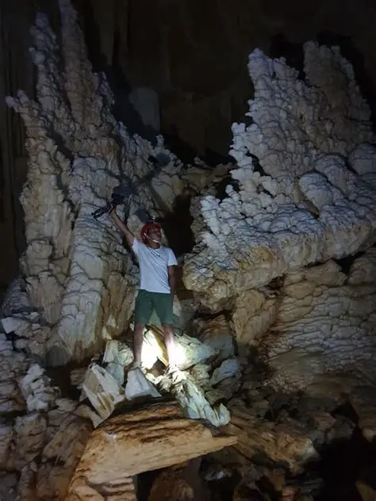

Beneath the surface of Sultan Kudarat lies a massive network of limestone caves. For centuries, these caves served as sacred burial grounds for the indigenous Kulaman Manobo. Today, they are world-class destinations for adventure seekers.
Safety First: Specialized guides are strictly required for all entries. This ensures the safety of travelers and the preservation of the fragile cave ecosystems.

An underground river cave where you can swim through ancient rock formations and witness the power of water erosion over millennia.

Known for its tight squeezes and impressive stalactites. This cave offers a more technical challenge for experienced spelunkers.

A large, cathedral-like cave system. With wide chambers and stable footing, it is perfect for beginner spelunkers and photographers.